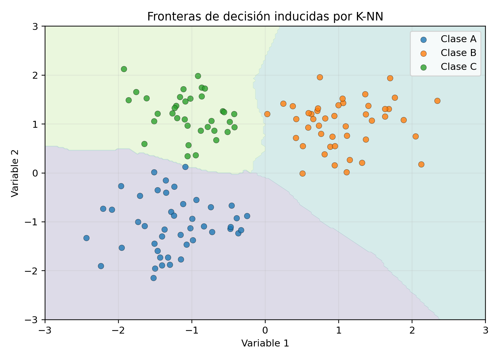

El método de vecinos más cercanos es no paramétrico y basa la predicción en observaciones localmente próximas. Su comportamiento depende de la métrica, la escala, el tamaño muestral y el número de vecinos (Cover y Hart 1967; Stone 1977; Duda et al. 2001).
El método de vecinos más cercanos, conocido como \(k\)-NN (\(k\)-Nearest Neighbors), es uno de los algoritmos más sencillos y a la vez más importantes del aprendizaje supervisado. Su idea central consiste en predecir la respuesta de una observación nueva a partir de las respuestas observadas en las muestras más próximas dentro del espacio de características.
A diferencia de modelos paramétricos como la regresión lineal o la regresión logística, \(k\)-NN no impone una forma funcional explícita para la relación entre variables. Por ello, se considera un método no paramétrico y basado en instancias.
En clasificación, la clase de una observación nueva se decide mediante voto mayoritario entre sus \(k\) vecinos más cercanos. En regresión, la predicción se obtiene promediando las respuestas de esos vecinos. Desde un punto de vista teórico, \(k\)-NN puede interpretarse como una aproximación local del riesgo condicional o de la función de regresión.
ImportanteDefinición esencial
K-NN predice usando las observaciones más cercanas según una métrica.
Objetivos
Al finalizar el capítulo, el lector podrá:
formular matemáticamente el algoritmo \(k\)-NN;
distinguir entre clasificación y regresión mediante vecinos;
definir vecindades y distancias en espacios métricos;
interpretar el papel del parámetro \(k\);
comprender la relación entre \(k\)-NN y la estimación local de probabilidades;
analizar el compromiso entre sesgo y varianza;
estudiar la consistencia del método;
comprender el papel de la dimensionalidad y la normalización;
formular variantes ponderadas de \(k\)-NN;
construir reglas multiclase;
analizar complejidad computacional y estructuras de búsqueda;
relacionar \(k\)-NN con fronteras de decisión, kernels y métodos no paramétricos.
La noción de cercanía no es absoluta: depende de la representación y de la métrica. Antes de aplicar k-NN deben justificarse el escalamiento, la selección de variables y el tratamiento de variables categóricas.

Figura 15.1: La elección de \(k\) y de la métrica determina regiones de decisión distintas.
Distancia euclidiana
La distancia más común en \(\mathbb{R}^p\) es la euclidiana:
tal que \(d_{(r)}=d(\mathbf{x}_0,\mathbf{x}_{(i_r)})\).
Definición de los vecinos más cercanos
Definición 15.1 Los \(k\) vecinos más cercanos de \(\mathbf{x}_0\) son las observaciones de entrenamiento asociadas a las \(k\) menores distancias respecto de \(\mathbf{x}_0\).
El conjunto de índices correspondientes se denota por
\[
N_k(\mathbf{x}_0).
\]
Regla de clasificación binaria
Supóngase \(Y\in\{0,1\}\). La probabilidad condicional local puede estimarse mediante
El método \(k\)-NN aproxima la respuesta en \(\mathbf{x}_0\) utilizando únicamente observaciones cercanas. Por ello, puede verse como un estimador local que supone que, en una vecindad suficientemente pequeña de \(\mathbf{x}_0\), la respuesta cambia poco.
La regla \(k\)-NN reemplaza \(\eta(\mathbf{x})\) por su estimación local \(\widehat{\eta}_k(\mathbf{x})\). De esta manera, \(k\)-NN puede entenderse como una aproximación empírica y no paramétrica de la regla de Bayes.
Pseudocódigo
Definición 15.2 Dada una observación nueva \(\mathbf{x}_0\):
calcular \(d(\mathbf{x}_0,\mathbf{x}_i)\) para todo \(i=1,\ldots,n\);
ordenar las distancias;
seleccionar los \(k\) índices con menor distancia;
en clasificación, realizar voto mayoritario;
en regresión, promediar las respuestas.
Papel del parámetro k
El parámetro \(k\) controla el tamaño de la vecindad local.
Si \(k=1\), la predicción depende exclusivamente del vecino más próximo.
Si \(k\) es grande, la predicción incorpora una región más amplia del espacio.
Por ello, \(k\) regula el compromiso entre flexibilidad y suavizamiento.
Sesgo y varianza
Cuando \(k\) es pequeño:
el modelo es muy flexible;
el sesgo suele ser bajo;
la varianza suele ser alta;
la frontera de decisión puede ser irregular.
Cuando \(k\) es grande:
el modelo es más suave;
el sesgo aumenta;
la varianza disminuye;
la frontera de decisión es más estable.
Casos extremos
Caso k igual a 1
La regla 1-NN memoriza la muestra y produce una frontera muy irregular. Tiende a ser sensible al ruido.
Caso k igual a n
Si \(k=n\), toda observación nueva utiliza la muestra completa.
En clasificación, la predicción siempre será la clase mayoritaria global.
En regresión,
\[
\widehat{m}_n(\mathbf{x}_0)=\overline{y}.
\]
En este caso se pierde toda adaptación local.
Error aparente de entrenamiento
En 1-NN, cada observación de entrenamiento es su propio vecino más cercano si no se excluye de la búsqueda. Por ello, el error aparente de entrenamiento puede ser cero o muy pequeño.
Sin embargo, ese resultado no refleja necesariamente el error de generalización. Para estimar desempeño predictivo es necesario emplear validación cruzada o un conjunto de prueba.
NotaCompromiso sesgo-varianza
Valores pequeños de \(k\) producen fronteras flexibles y alta varianza. Valores grandes suavizan la frontera, pero pueden aumentar el sesgo. El valor de \(k\) debe elegirse mediante validación.
La regla de vecinos cercanos se apoya en resultados clásicos de Cover y Hart (1967) y Stone (1977). La figura Figura 15.1 ilustra cómo la clasificación depende de vecindades locales y de la escala.
Selección de k
La elección de \(k\) suele realizarse mediante validación cruzada. Formalmente,
Si alguna distancia es cero, debe tratarse por separado para evitar división entre cero.
k-NN como estimador de ventana móvil
El método puede interpretarse como una estimación local sobre una vecindad aleatoria cuyo radio depende de la densidad de datos. En regiones densas, el radio necesario para contener \(k\) vecinos es pequeño; en regiones dispersas, el radio es mayor.
Esto contrasta con métodos de ventana fija, donde el radio es constante y el número de observaciones dentro de la vecindad varía.
En cierto sentido, \(k\)-NN corresponde a una vecindad adaptativa con pesos uniformes sobre los \(k\) vecinos seleccionados y peso cero fuera de ellos.
Consistencia
Uno de los resultados teóricos clásicos afirma que, bajo condiciones regulares, \(k\)-NN es consistente si
\[
k\to\infty
\]
y al mismo tiempo
\[
\frac{k}{n}\to 0
\]
cuando \(n\to\infty\).
Estas condiciones expresan que:
el número de vecinos debe crecer para reducir varianza;
la fracción de la muestra usada localmente debe hacerse pequeña para preservar localización.
Comentario sobre consistencia de clasificación
Bajo hipótesis adecuadas, el riesgo de clasificación de la regla \(k\)-NN converge al riesgo de Bayes. El caso 1-NN, aunque no es consistentemente óptimo en el mismo sentido, satisface resultados clásicos como la cota de Cover y Hart.
Resultado de Cover y Hart
Para 1-NN, el error asintótico de clasificación \(R_{1NN}\) satisface la desigualdad
\[
R^*\le R_{1NN}\le 2R^*(1-R^*),
\]
donde \(R^*\) es el error de Bayes.
Esta cota muestra que el vecino más cercano puede tener un desempeño competitivo, aunque no sea óptimo.
Fronteras de decisión
La frontera de decisión de \(k\)-NN puede ser muy irregular, especialmente para valores pequeños de \(k\). La estructura geométrica depende de la partición inducida por las distancias entre puntos de entrenamiento.
En el caso 1-NN, las regiones de clasificación se relacionan con diagramas de Voronoi.
Celdas de Voronoi
Para cada punto de entrenamiento \(\mathbf{x}_i\), la celda de Voronoi asociada es
\[
V_i
=
\left\{
\mathbf{x}\in\mathcal{X}:
d(\mathbf{x},\mathbf{x}_i)
\le
d(\mathbf{x},\mathbf{x}_j)
\text{ para todo } j
\right\}.
\]
En 1-NN, toda observación dentro de \(V_i\) recibe la respuesta del punto \(i\).
Influencia de la escala de las variables
El desempeño de \(k\)-NN depende fuertemente de la distancia, y la distancia depende de la escala de las variables. Si una variable tiene magnitudes mucho mayores que otra, dominará la medición de cercanía.
Por ello, casi siempre es necesario estandarizar o normalizar las variables antes de aplicar \(k\)-NN.
Estandarización
Una transformación habitual es
\[
z_{ij}
=
\frac{x_{ij}-\overline{x}_j}{s_j}.
\]
Otra posibilidad es reescalar al intervalo \([0,1]\).
Variables irrelevantes
Las variables irrelevantes pueden deteriorar gravemente el desempeño, pues introducen ruido en la distancia y dificultan la identificación de vecinos realmente informativos.
Por ello, en problemas de alta dimensión es importante considerar:
selección de variables;
reducción de dimensionalidad;
ponderación de características;
distancias especializadas.
AdvertenciaDimensión alta
Cuando la dimensión crece, las distancias tienden a perder contraste y las vecindades necesitan abarcar regiones amplias para contener suficientes observaciones. La reducción o selección de variables puede ser esencial.
Maldición de la dimensionalidad
A medida que la dimensión \(p\) crece, los puntos tienden a parecerse entre sí en términos relativos de distancia. Esto reduce el carácter local de la vecindad y puede degradar severamente el método.
Este fenómeno se conoce como maldición de la dimensionalidad.
Interpretación geométrica de la maldición de la dimensionalidad
En dimensiones altas, para capturar una fracción pequeña de la probabilidad alrededor de un punto, la vecindad debe expandirse notablemente. En consecuencia, los vecinos más cercanos pueden dejar de ser realmente cercanos.
Esto explica por qué \(k\)-NN suele funcionar mejor en dimensiones moderadas y con variables informativas bien escaladas.
Reducción de dimensionalidad antes de k-NN
Es frecuente aplicar métodos como PCA antes de \(k\)-NN para concentrar la información relevante en pocas dimensiones y reducir ruido. Sin embargo, esta transformación debe aprenderse dentro de cada partición de entrenamiento para evitar fuga de información.
Costos computacionales
Entrenamiento
El costo de entrenamiento de \(k\)-NN es bajo, pues esencialmente consiste en almacenar la muestra.
Predicción
La predicción puede ser costosa. Para cada punto nuevo, la búsqueda ingenua requiere calcular distancias a las \(n\) observaciones, con un costo del orden de
\[
O(np)
\]
por predicción, más el costo de identificar los \(k\) menores valores.
Estructuras de búsqueda
Para acelerar la búsqueda de vecinos se emplean estructuras como:
k-d trees;
ball trees;
hashing sensible a localidad;
búsqueda aproximada de vecinos.
Su utilidad depende de la dimensión y de la estructura de los datos.
Distancia para variables mixtas
Cuando existen variables numéricas y categóricas, la distancia euclidiana puede ser inadecuada. En tales casos puede utilizarse:
codificación apropiada de variables categóricas;
distancias de Gower;
métricas mixtas especializadas.
Desbalance de clases
Si una clase es muy frecuente, el voto mayoritario puede sesgarse hacia ella. Algunas estrategias son:
ponderación por distancia;
ajuste del umbral sobre probabilidades locales;
sobre-muestreo o sub-muestreo;
voto con pesos por clase.
Probabilidades predichas y calibración
En clasificación, la proporción local de vecinos de una clase puede interpretarse como una probabilidad predicha. No obstante, la calibración de esas probabilidades depende del tamaño de la vecindad y de la densidad local de datos.
Por ello, la evaluación del método no debe limitarse a exactitud, sino también a métricas probabilísticas cuando corresponda.
Sensibilidad al ruido y a valores atípicos
Con valores pequeños de \(k\), el método puede ser sensible a:
etiquetas erróneas;
observaciones atípicas;
regiones escasas del espacio.
Aumentar \(k\) o ponderar por distancia puede mitigar parcialmente este problema.
Interpretación de la complejidad del modelo
Aunque \(k\)-NN no ajusta explícitamente parámetros, su complejidad depende de:
el valor de \(k\);
la métrica utilizada;
la escala de las variables;
la dimensión efectiva del problema.
En este sentido, \(k\) actúa como parámetro de suavizamiento o regularización.
Relación con regresión local
En regresión, \(k\)-NN constituye una forma elemental de regresión local constante. Métodos más avanzados, como la regresión local lineal, mejoran esta aproximación ajustando modelos dentro de la vecindad.
Con distancia euclidiana, las distancias a los puntos 3 y 4 son las más pequeñas. Si \(k=3\), se incluyen los tres vecinos más cercanos y se realiza voto mayoritario.
La clasificación final dependerá de las distancias exactas y del valor de \(k\), lo cual ilustra la naturaleza local del método.
Ejemplo numérico de regresión
Supóngase que las respuestas asociadas a los 4 vecinos más cercanos de un punto son
Si se usan pesos proporcionales a la cercanía, la predicción puede desplazarse hacia los vecinos más próximos.
Seudocódigo formal
NotaSeudocódigo matemático formal
Algoritmo KNNEntrada: D = {(x_i, y_i)}_{i=1}^n, k ∈ ℕSalida: Regla de clasificación h_kPredicción para una nueva observación x:1. Para i = 1,...,n calcular la distancia d_i(x) = ||x - x_i||.2. Reordenar los índices de modo que d_{π(1)}(x) ≤ d_{π(2)}(x) ≤ ... ≤ d_{π(n)}(x).3. Definir el vecindario N_k(x) = {π(1), ..., π(k)}.4. Para cada clase c, calcular el voto v_c(x) = \sum_{j∈N_k(x)} I(y_j = c).5. Devolver h_k(x) = argmax_c v_c(x).
Ventajas
es conceptualmente simple;
no requiere ajuste paramétrico explícito;
puede adaptarse a fronteras de decisión complejas;
funciona bien en problemas pequeños o medianos con estructura local clara;
es flexible tanto para clasificación como para regresión.
Limitaciones
depende fuertemente de la escala de variables;
puede ser costoso en predicción;
es sensible a la dimensionalidad alta;
sufre con variables irrelevantes;
puede ser sensible al ruido para valores pequeños de \(k\);
su interpretabilidad global es limitada.
Errores frecuentes
aplicar \(k\)-NN sin estandarizar variables;
elegir \(k\) sin validación;
ignorar empates;
usarlo en alta dimensión sin reducción o selección de variables;
evaluar únicamente exactitud;
preprocesar usando todo el conjunto antes de la validación;
utilizar distancia euclidiana con variables categóricas sin tratamiento adecuado;
confundir memorizar la muestra con generalizar bien.
Ejercicios conceptuales
Explique por qué \(k\)-NN es un método no paramétrico.
¿Qué papel cumple la distancia?
¿Cómo se interpreta el parámetro \(k\)?
¿Por qué \(k\) pequeño reduce sesgo pero aumenta varianza?
¿Por qué la estandarización es importante?
¿Qué significa que \(k\)-NN sea local?
Explique la maldición de la dimensionalidad.
¿Qué ventaja ofrece la ponderación por distancia?
¿Por qué se requiere validación cruzada para elegir \(k\)?
¿Qué relación existe entre \(k\)-NN y la regla de Bayes?
Ejercicio de distancias
Considere los puntos
\[
(1,1),\;(2,3),\;(4,4),\;(6,5)
\]
y el punto nuevo
\[
(3,2).
\]
Calcule las distancias euclidianas.
Ordene los vecinos.
Identifique los 2 y 3 vecinos más cercanos.
Repita con distancia Manhattan.
Compare el orden obtenido.
Ejercicio de clasificación
Considere la siguiente muestra:
\(x_1\)
\(x_2\)
Clase
1
1
A
2
1
A
3
2
A
5
5
B
6
5
B
7
6
B
Clasifique el punto \((4,4)\) para:
\(k=1\);
\(k=3\);
\(k=5\).
Interprete cómo cambia la decisión.
Ejercicio de regresión
Las respuestas de los 5 vecinos más cercanos son:
\[
12,\;14,\;15,\;16,\;23.
\]
Calcule la predicción con promedio simple.
Suponga pesos \[
0.35,\;0.25,\;0.20,\;0.15,\;0.05
\] y calcule la predicción ponderada.
Compare ambas estimaciones.
Ejercicio de selección de k
Se obtiene el siguiente error de validación cruzada:
\(k\)
Error CV
1
0.18
3
0.14
5
0.12
7
0.13
9
0.15
15
0.19
Seleccione el mejor valor de \(k\).
Explique por qué no conviene elegir \(k=1\) solo por su flexibilidad.
Interprete el patrón en términos de sesgo y varianza.
Ejercicio aplicado
Se desea clasificar accidentes de tránsito como severos o no severos usando:
velocidad estimada;
hora del día;
condición climática;
tipo de vialidad;
presencia de peatones.
Diseñe un análisis con \(k\)-NN que incluya:
preprocesamiento;
tratamiento de variables categóricas;
escalamiento;
división entrenamiento-validación-prueba;
selección de \(k\);
elección de la métrica;
evaluación con matriz de confusión, sensibilidad y AUC;
comparación con regresión logística;
análisis del efecto de la dimensionalidad;
limitaciones prácticas.
Resumen
En este capítulo se desarrolló el método de vecinos más cercanos como un procedimiento no paramétrico y local para clasificación y regresión.
Se formularon matemáticamente la noción de vecino, las reglas de voto y promedio, las distancias más utilizadas y la interpretación de \(k\) como parámetro de suavizamiento. También se analizó el compromiso entre sesgo y varianza, la consistencia, la maldición de la dimensionalidad, la necesidad de escalamiento y las variantes ponderadas.
Finalmente, se estudiaron sus costos computacionales, su relación con la regla de Bayes, con celdas de Voronoi y con estimadores locales. Estos fundamentos preparan el estudio de árboles de decisión, métodos de margen y otros clasificadores no lineales.
Referencias del capítulo
Los fundamentos se apoyan en Cover y Hart (1967), Stone (1977), Duda et al. (2001) y Hastie et al. (2009).
Cover, Thomas M., y Peter E. Hart. 1967. «Nearest Neighbor Pattern Classification». IEEE Transactions on Information Theory 13 (1): 21-27. https://doi.org/10.1109/TIT.1967.1053964.
Duda, Richard O., Peter E. Hart, y David G. Stork. 2001. Pattern Classification. 2.ª ed. Wiley.
Hastie, Trevor, Robert Tibshirani, y Jerome Friedman. 2009. The Elements of Statistical Learning: Data Mining, Inference, and Prediction. 2.ª ed. Springer. https://doi.org/10.1007/978-0-387-84858-7.
# Vecinos más cercanos, k-NN\index{K-NN} {#sec-knn}## Introducción {.unnumbered}El método de vecinos más cercanos es no paramétrico y basa la predicción en observaciones localmente próximas. Su comportamiento depende de la métrica, la escala, el tamaño muestral y el número de vecinos [@cover1967nearest; @stone1977consistent; @duda2001pattern].El método de vecinos más cercanos, conocido como $k$-NN (*$k$-Nearest Neighbors*), es uno de los algoritmos más sencillos y a la vez más importantes del aprendizaje supervisado. Su idea central consiste en predecir la respuesta de una observación nueva a partir de las respuestas observadas en las muestras más próximas dentro del espacio de características.A diferencia de modelos paramétricos como la regresión lineal o la regresión logística, $k$-NN no impone una forma funcional explícita para la relación entre variables. Por ello, se considera un método no paramétrico y basado en instancias.En clasificación, la clase de una observación nueva se decide mediante voto mayoritario entre sus $k$ vecinos más cercanos. En regresión, la predicción se obtiene promediando las respuestas de esos vecinos. Desde un punto de vista teórico, $k$-NN puede interpretarse como una aproximación local del riesgo condicional o de la función de regresión.::: {.callout-important title="Definición esencial" appearance="default" icon="true"}K-NN predice usando las observaciones más cercanas según una métrica.:::## Objetivos {.unnumbered}Al finalizar el capítulo, el lector podrá:1. formular matemáticamente el algoritmo $k$-NN;2. distinguir entre clasificación y regresión mediante vecinos;3. definir vecindades y distancias en espacios métricos;4. interpretar el papel del parámetro $k$;5. comprender la relación entre $k$-NN y la estimación local de probabilidades;6. analizar el compromiso entre sesgo y varianza;7. estudiar la consistencia del método;8. comprender el papel de la dimensionalidad y la normalización;9. formular variantes ponderadas de $k$-NN;10. construir reglas multiclase;11. analizar complejidad computacional y estructuras de búsqueda;12. relacionar $k$-NN con fronteras de decisión, kernels y métodos no paramétricos.## Espacio de entrada y muestra {.unnumbered}Considérese una muestra de entrenamiento$$\mathcal{D}_n=\left\{(\mathbf{x}_1,y_1),\ldots,(\mathbf{x}_n,y_n)\right\},$$donde$$\mathbf{x}_i\in\mathcal{X}\subseteq\mathbb{R}^p$$y la respuesta puede ser:- binaria, si $y_i\in\{0,1\}$;- multiclase, si $y_i\in\{1,\ldots,C\}$;- continua, si $y_i\in\mathbb{R}$.Se recibe una observación nueva$$\mathbf{x}_0\in\mathcal{X},$$y se desea predecir su respuesta.## Espacio métrico {.unnumbered}El algoritmo requiere una noción de cercanía. Matemáticamente, ello se expresa mediante una distancia$$d:\mathcal{X}\times\mathcal{X}\to[0,\infty),$$que satisface, para cualesquiera $\mathbf{x},\mathbf{z},\mathbf{w}\in\mathcal{X}$:1. $d(\mathbf{x},\mathbf{z})\ge 0$;2. $d(\mathbf{x},\mathbf{z})=0$ si y solo si $\mathbf{x}=\mathbf{z}$;3. $d(\mathbf{x},\mathbf{z})=d(\mathbf{z},\mathbf{x})$;4. $d(\mathbf{x},\mathbf{w})\le d(\mathbf{x},\mathbf{z})+d(\mathbf{z},\mathbf{w})$.::: {.callout-important title="Escala y geometría" appearance="default" icon="true"}La noción de cercanía no es absoluta: depende de la representación y de la métrica. Antes de aplicar k-NN deben justificarse el escalamiento, la selección de variables y el tratamiento de variables categóricas.:::{#fig-knn-frontera width=84% fig-alt="Tres clases con regiones de decisión inducidas por K-NN"}## Distancia euclidiana {.unnumbered}La distancia más común en $\mathbb{R}^p$ es la euclidiana:$$d_2(\mathbf{x},\mathbf{z})=\left(\sum_{j=1}^{p}(x_j-z_j)^2\right)^{1/2}.$$## Distancia Manhattan {.unnumbered}Otra distancia importante es$$d_1(\mathbf{x},\mathbf{z})=\sum_{j=1}^{p}|x_j-z_j|.$$## Distancia de Minkowski {.unnumbered}Una familia general es$$d_q(\mathbf{x},\mathbf{z})=\left(\sum_{j=1}^{p}|x_j-z_j|^q\right)^{1/q},\qquad q\ge 1.$$Para $q=1$ se obtiene Manhattan y para $q=2$ Euclidiana.## Distancia de Mahalanobis {.unnumbered}Cuando las variables presentan escalas distintas o correlación, puede utilizarse$$d_M(\mathbf{x},\mathbf{z})=\sqrt{(\mathbf{x}-\mathbf{z})^{\mathsf T}\mathbf{S}^{-1}(\mathbf{x}-\mathbf{z})},$$donde $\mathbf{S}$ es una matriz de covarianza o dispersión.## Ordenamiento de distancias {.unnumbered}Para la observación nueva $\mathbf{x}_0$, se calculan las distancias$$d_i=d(\mathbf{x}_0,\mathbf{x}_i),\qquad i=1,\ldots,n.$$Ordenándolas de menor a mayor,$$d_{(1)}\le d_{(2)}\le\cdots\le d_{(n)},$$se obtiene una permutación de índices$$(i_1),(i_2),\ldots,(i_n)$$tal que $d_{(r)}=d(\mathbf{x}_0,\mathbf{x}_{(i_r)})$.## Definición de los vecinos más cercanos {.unnumbered}::: {#def-vecinos}Los $k$ vecinos más cercanos de $\mathbf{x}_0$ son las observaciones de entrenamiento asociadas a las $k$ menores distancias respecto de $\mathbf{x}_0$.:::El conjunto de índices correspondientes se denota por$$N_k(\mathbf{x}_0).$$## Regla de clasificación binaria {.unnumbered}Supóngase $Y\in\{0,1\}$. La probabilidad condicional local puede estimarse mediante$$\widehat{\eta}_k(\mathbf{x}_0)=\frac{1}{k}\sum_{i\in N_k(\mathbf{x}_0)} y_i.$$Como $y_i\in\{0,1\}$, esta cantidad representa la proporción de vecinos de clase 1.La regla de clasificación es$$\widehat{g}_k(\mathbf{x}_0)=\begin{cases}1, & \widehat{\eta}_k(\mathbf{x}_0)\ge 1/2,\\0, & \widehat{\eta}_k(\mathbf{x}_0)<1/2.\end{cases}$$## Regla multiclase {.unnumbered}Si $Y\in\{1,\ldots,C\}$, para cada clase $c$ se estima$$\widehat{p}_c(\mathbf{x}_0)=\frac{1}{k}\sum_{i\in N_k(\mathbf{x}_0)}\mathbb{I}(y_i=c).$$La predicción se obtiene mediante$$\widehat{g}_k(\mathbf{x}_0)=\arg\max_{c\in\{1,\ldots,C\}}\widehat{p}_c(\mathbf{x}_0).$$## Regla de regresión {.unnumbered}Si la respuesta es continua, la estimación natural es el promedio local:$$\widehat{m}_k(\mathbf{x}_0)=\frac{1}{k}\sum_{i\in N_k(\mathbf{x}_0)} y_i.$$Esta expresión aproxima la función de regresión$$m(\mathbf{x})=\mathbb{E}(Y\mid\mathbf{X}=\mathbf{x}).$$## Interpretación local {.unnumbered}El método $k$-NN aproxima la respuesta en $\mathbf{x}_0$ utilizando únicamente observaciones cercanas. Por ello, puede verse como un estimador local que supone que, en una vecindad suficientemente pequeña de $\mathbf{x}_0$, la respuesta cambia poco.En clasificación binaria, si$$\eta(\mathbf{x})=P(Y=1\mid\mathbf{X}=\mathbf{x}),$$entonces$$\widehat{\eta}_k(\mathbf{x}_0)$$es una estimación local de dicha probabilidad.## Relación con la regla de Bayes {.unnumbered}La regla óptima de Bayes en clasificación binaria es$$g^*(\mathbf{x})=\begin{cases}1, & \eta(\mathbf{x})\ge 1/2,\\0, & \eta(\mathbf{x})<1/2.\end{cases}$$La regla $k$-NN reemplaza $\eta(\mathbf{x})$ por su estimación local $\widehat{\eta}_k(\mathbf{x})$. De esta manera, $k$-NN puede entenderse como una aproximación empírica y no paramétrica de la regla de Bayes.## Pseudocódigo {.unnumbered}::: {#def-pseudocodigo-knn}Dada una observación nueva $\mathbf{x}_0$:1. calcular $d(\mathbf{x}_0,\mathbf{x}_i)$ para todo $i=1,\ldots,n$;2. ordenar las distancias;3. seleccionar los $k$ índices con menor distancia;4. en clasificación, realizar voto mayoritario;5. en regresión, promediar las respuestas.:::## Papel del parámetro k {.unnumbered}El parámetro $k$ controla el tamaño de la vecindad local.- Si $k=1$, la predicción depende exclusivamente del vecino más próximo.- Si $k$ es grande, la predicción incorpora una región más amplia del espacio.Por ello, $k$ regula el compromiso entre flexibilidad y suavizamiento.## Sesgo y varianza {.unnumbered}Cuando $k$ es pequeño:- el modelo es muy flexible;- el sesgo suele ser bajo;- la varianza suele ser alta;- la frontera de decisión puede ser irregular.Cuando $k$ es grande:- el modelo es más suave;- el sesgo aumenta;- la varianza disminuye;- la frontera de decisión es más estable.## Casos extremos {.unnumbered}### Caso k igual a 1 {.unnumbered}La regla 1-NN memoriza la muestra y produce una frontera muy irregular. Tiende a ser sensible al ruido.### Caso k igual a n {.unnumbered}Si $k=n$, toda observación nueva utiliza la muestra completa.En clasificación, la predicción siempre será la clase mayoritaria global.En regresión,$$\widehat{m}_n(\mathbf{x}_0)=\overline{y}.$$En este caso se pierde toda adaptación local.## Error aparente de entrenamiento {.unnumbered}En 1-NN, cada observación de entrenamiento es su propio vecino más cercano si no se excluye de la búsqueda. Por ello, el error aparente de entrenamiento puede ser cero o muy pequeño.Sin embargo, ese resultado no refleja necesariamente el error de generalización. Para estimar desempeño predictivo es necesario emplear validación cruzada o un conjunto de prueba.::: {.callout-note title="Compromiso sesgo-varianza" appearance="default" icon="true"}Valores pequeños de $k$ producen fronteras flexibles y alta varianza. Valores grandes suavizan la frontera, pero pueden aumentar el sesgo. El valor de $k$ debe elegirse mediante validación.:::La regla de vecinos cercanos se apoya en resultados clásicos de @cover1967nearest y @stone1977consistent. La figura @fig-knn-frontera ilustra cómo la clasificación depende de vecindades locales y de la escala.## Selección de k {.unnumbered}La elección de $k$ suele realizarse mediante validación cruzada. Formalmente,$$\widehat{k}=\arg\min_{k\in\mathcal{K}} CV(k),$$donde $CV(k)$ representa una estimación del error de predicción asociada al valor $k$.También puede usarse la regla de un error estándar para seleccionar un valor más grande y estable.## Empates {.unnumbered}Pueden aparecer empates en dos sentidos:1. empate de distancias, cuando varios puntos tienen la misma distancia al punto objetivo;2. empate de votos, cuando varias clases reciben el mismo número de vecinos.Las reglas para resolverlos incluyen:- seleccionar aleatoriamente entre las clases empatadas;- favorecer la clase del vecino más cercano entre las empatadas;- elegir $k$ impar en clasificación binaria;- ponderar por distancia.## Vecinos ponderados {.unnumbered}Una variante natural asigna pesos mayores a los vecinos más cercanos. Si $w_i(\mathbf{x}_0)\ge 0$ para $i\in N_k(\mathbf{x}_0)$, con$$\sum_{i\in N_k(\mathbf{x}_0)} w_i(\mathbf{x}_0)=1,$$entonces la estimación de clasificación binaria es$$\widehat{\eta}_{k,w}(\mathbf{x}_0)=\sum_{i\in N_k(\mathbf{x}_0)}w_i(\mathbf{x}_0)y_i.$$En regresión,$$\widehat{m}_{k,w}(\mathbf{x}_0)=\sum_{i\in N_k(\mathbf{x}_0)}w_i(\mathbf{x}_0)y_i.$$## Ponderación inversa a la distancia {.unnumbered}Una elección frecuente es$$w_i(\mathbf{x}_0)=\frac{1/d(\mathbf{x}_0,\mathbf{x}_i)}{\sum_{j\in N_k(\mathbf{x}_0)}1/d(\mathbf{x}_0,\mathbf{x}_j)}.$$Si alguna distancia es cero, debe tratarse por separado para evitar división entre cero.## k-NN como estimador de ventana móvil {.unnumbered}El método puede interpretarse como una estimación local sobre una vecindad aleatoria cuyo radio depende de la densidad de datos. En regiones densas, el radio necesario para contener $k$ vecinos es pequeño; en regiones dispersas, el radio es mayor.Esto contrasta con métodos de ventana fija, donde el radio es constante y el número de observaciones dentro de la vecindad varía.## Relación con kernels {.unnumbered}Los estimadores con kernels tienen la forma$$\widehat{m}_h(\mathbf{x}_0)=\frac{\sum_{i=1}^{n} K_h(\mathbf{x}_0,\mathbf{x}_i) y_i}{\sum_{i=1}^{n} K_h(\mathbf{x}_0,\mathbf{x}_i)}.$$En cierto sentido, $k$-NN corresponde a una vecindad adaptativa con pesos uniformes sobre los $k$ vecinos seleccionados y peso cero fuera de ellos.## Consistencia {.unnumbered}Uno de los resultados teóricos clásicos afirma que, bajo condiciones regulares, $k$-NN es consistente si$$k\to\infty$$y al mismo tiempo$$\frac{k}{n}\to 0$$cuando $n\to\infty$.Estas condiciones expresan que:- el número de vecinos debe crecer para reducir varianza;- la fracción de la muestra usada localmente debe hacerse pequeña para preservar localización.## Comentario sobre consistencia de clasificación {.unnumbered}Bajo hipótesis adecuadas, el riesgo de clasificación de la regla $k$-NN converge al riesgo de Bayes. El caso 1-NN, aunque no es consistentemente óptimo en el mismo sentido, satisface resultados clásicos como la cota de Cover y Hart.## Resultado de Cover y Hart {.unnumbered}Para 1-NN, el error asintótico de clasificación $R_{1NN}$ satisface la desigualdad$$R^*\le R_{1NN}\le 2R^*(1-R^*),$$donde $R^*$ es el error de Bayes.Esta cota muestra que el vecino más cercano puede tener un desempeño competitivo, aunque no sea óptimo.## Fronteras de decisión {.unnumbered}La frontera de decisión de $k$-NN puede ser muy irregular, especialmente para valores pequeños de $k$. La estructura geométrica depende de la partición inducida por las distancias entre puntos de entrenamiento.En el caso 1-NN, las regiones de clasificación se relacionan con diagramas de Voronoi.## Celdas de Voronoi {.unnumbered}Para cada punto de entrenamiento $\mathbf{x}_i$, la celda de Voronoi asociada es$$V_i=\left\{\mathbf{x}\in\mathcal{X}: d(\mathbf{x},\mathbf{x}_i) \le d(\mathbf{x},\mathbf{x}_j) \text{ para todo } j\right\}.$$En 1-NN, toda observación dentro de $V_i$ recibe la respuesta del punto $i$.## Influencia de la escala de las variables {.unnumbered}El desempeño de $k$-NN depende fuertemente de la distancia, y la distancia depende de la escala de las variables. Si una variable tiene magnitudes mucho mayores que otra, dominará la medición de cercanía.Por ello, casi siempre es necesario estandarizar o normalizar las variables antes de aplicar $k$-NN.## Estandarización {.unnumbered}Una transformación habitual es$$z_{ij}=\frac{x_{ij}-\overline{x}_j}{s_j}.$$Otra posibilidad es reescalar al intervalo $[0,1]$.## Variables irrelevantes {.unnumbered}Las variables irrelevantes pueden deteriorar gravemente el desempeño, pues introducen ruido en la distancia y dificultan la identificación de vecinos realmente informativos.Por ello, en problemas de alta dimensión es importante considerar:- selección de variables;- reducción de dimensionalidad;- ponderación de características;- distancias especializadas.::: {.callout-warning title="Dimensión alta" appearance="default" icon="true"}Cuando la dimensión crece, las distancias tienden a perder contraste y las vecindades necesitan abarcar regiones amplias para contener suficientes observaciones. La reducción o selección de variables puede ser esencial.:::## Maldición de la dimensionalidad\index{Maldición de la dimensionalidad} {.unnumbered}A medida que la dimensión $p$ crece, los puntos tienden a parecerse entre sí en términos relativos de distancia. Esto reduce el carácter local de la vecindad y puede degradar severamente el método.Este fenómeno se conoce como maldición de la dimensionalidad.## Interpretación geométrica de la maldición de la dimensionalidad {.unnumbered}En dimensiones altas, para capturar una fracción pequeña de la probabilidad alrededor de un punto, la vecindad debe expandirse notablemente. En consecuencia, los vecinos más cercanos pueden dejar de ser realmente cercanos.Esto explica por qué $k$-NN suele funcionar mejor en dimensiones moderadas y con variables informativas bien escaladas.## Reducción de dimensionalidad antes de k-NN {.unnumbered}Es frecuente aplicar métodos como PCA antes de $k$-NN para concentrar la información relevante en pocas dimensiones y reducir ruido. Sin embargo, esta transformación debe aprenderse dentro de cada partición de entrenamiento para evitar fuga de información.## Costos computacionales {.unnumbered}### Entrenamiento {.unnumbered}El costo de entrenamiento de $k$-NN es bajo, pues esencialmente consiste en almacenar la muestra.### Predicción {.unnumbered}La predicción puede ser costosa. Para cada punto nuevo, la búsqueda ingenua requiere calcular distancias a las $n$ observaciones, con un costo del orden de$$O(np)$$por predicción, más el costo de identificar los $k$ menores valores.## Estructuras de búsqueda {.unnumbered}Para acelerar la búsqueda de vecinos se emplean estructuras como:- *k-d trees*;- *ball trees*;- hashing sensible a localidad;- búsqueda aproximada de vecinos.Su utilidad depende de la dimensión y de la estructura de los datos.## Distancia para variables mixtas {.unnumbered}Cuando existen variables numéricas y categóricas, la distancia euclidiana puede ser inadecuada. En tales casos puede utilizarse:- codificación apropiada de variables categóricas;- distancias de Gower;- métricas mixtas especializadas.## Desbalance de clases {.unnumbered}Si una clase es muy frecuente, el voto mayoritario puede sesgarse hacia ella. Algunas estrategias son:- ponderación por distancia;- ajuste del umbral sobre probabilidades locales;- sobre-muestreo o sub-muestreo;- voto con pesos por clase.## Probabilidades predichas y calibración {.unnumbered}En clasificación, la proporción local de vecinos de una clase puede interpretarse como una probabilidad predicha. No obstante, la calibración de esas probabilidades depende del tamaño de la vecindad y de la densidad local de datos.Por ello, la evaluación del método no debe limitarse a exactitud, sino también a métricas probabilísticas cuando corresponda.## Sensibilidad al ruido y a valores atípicos {.unnumbered}Con valores pequeños de $k$, el método puede ser sensible a:- etiquetas erróneas;- observaciones atípicas;- regiones escasas del espacio.Aumentar $k$ o ponderar por distancia puede mitigar parcialmente este problema.## Interpretación de la complejidad del modelo {.unnumbered}Aunque $k$-NN no ajusta explícitamente parámetros, su complejidad depende de:- el valor de $k$;- la métrica utilizada;- la escala de las variables;- la dimensión efectiva del problema.En este sentido, $k$ actúa como parámetro de suavizamiento o regularización.## Relación con regresión local {.unnumbered}En regresión, $k$-NN constituye una forma elemental de regresión local constante. Métodos más avanzados, como la regresión local lineal, mejoran esta aproximación ajustando modelos dentro de la vecindad.## Conexión con el aprendizaje supervisado {.unnumbered}El algoritmo define una familia de predictores$$\mathcal{F}=\left\{\widehat{f}_{k,d}: k\in\mathcal{K}, d\in\mathcal{D}\right\},$$determinada por el número de vecinos y la métrica. La selección de estos hiperparámetros se realiza normalmente mediante validación cruzada.## Conexión con R {.unnumbered}```{r}#| eval: false# Clasificación con k-NN# Requiere classlibrary(class)x <-data.frame(x1 =c(1, 2, 3, 6, 7, 8),x2 =c(1, 1, 2, 6, 7, 8))y <-factor(c("A", "A", "A", "B", "B", "B"))# Escalamientox_esc <-scale(x)nuevo <-data.frame(x1 =4, x2 =4)nuevo_esc <-scale(nuevo,center =attr(x_esc, "scaled:center"),scale =attr(x_esc, "scaled:scale"))knn(train = x_esc,test = nuevo_esc,cl = y,k =3,prob =TRUE)# Regresión con k-NN aproximada usando FNN# library(FNN)# knn.reg(train = x_esc, y = respuesta, test = nuevo_esc, k = 5)```## Ejemplo numérico de clasificación {.unnumbered}Considérese la muestra:| Observación | $x_1$ | $x_2$ | Clase ||---:|---:|---:|:---:|| 1 | 1 | 1 | A || 2 | 2 | 1 | A || 3 | 2 | 2 | A || 4 | 5 | 5 | B || 5 | 6 | 5 | B || 6 | 6 | 6 | B |Se desea clasificar$$\mathbf{x}_0=(4,4).$$Con distancia euclidiana, las distancias a los puntos 3 y 4 son las más pequeñas. Si $k=3$, se incluyen los tres vecinos más cercanos y se realiza voto mayoritario.La clasificación final dependerá de las distancias exactas y del valor de $k$, lo cual ilustra la naturaleza local del método.## Ejemplo numérico de regresión {.unnumbered}Supóngase que las respuestas asociadas a los 4 vecinos más cercanos de un punto son$$8,\;10,\;11,\;15.$$Entonces, para $k=4$,$$\widehat{m}_4(\mathbf{x}_0)=\frac{8+10+11+15}{4}=11.$$Si se usan pesos proporcionales a la cercanía, la predicción puede desplazarse hacia los vecinos más próximos.## Seudocódigo formal {.unnumbered}::: {.callout-note title="Seudocódigo matemático formal" appearance="default" icon="true"}```textAlgoritmo KNNEntrada: D = {(x_i, y_i)}_{i=1}^n, k ∈ ℕSalida: Regla de clasificación h_kPredicción para una nueva observación x:1. Para i = 1,...,n calcular la distancia d_i(x) = ||x - x_i||.2. Reordenar los índices de modo que d_{π(1)}(x) ≤ d_{π(2)}(x) ≤ ... ≤ d_{π(n)}(x).3. Definir el vecindario N_k(x) = {π(1), ..., π(k)}.4. Para cada clase c, calcular el voto v_c(x) = \sum_{j∈N_k(x)} I(y_j = c).5. Devolver h_k(x) = argmax_c v_c(x).```:::## Ventajas {.unnumbered}1. es conceptualmente simple;2. no requiere ajuste paramétrico explícito;3. puede adaptarse a fronteras de decisión complejas;4. funciona bien en problemas pequeños o medianos con estructura local clara;5. es flexible tanto para clasificación como para regresión.## Limitaciones {.unnumbered}1. depende fuertemente de la escala de variables;2. puede ser costoso en predicción;3. es sensible a la dimensionalidad alta;4. sufre con variables irrelevantes;5. puede ser sensible al ruido para valores pequeños de $k$;6. su interpretabilidad global es limitada.## Errores frecuentes {.unnumbered}1. aplicar $k$-NN sin estandarizar variables;2. elegir $k$ sin validación;3. ignorar empates;4. usarlo en alta dimensión sin reducción o selección de variables;5. evaluar únicamente exactitud;6. preprocesar usando todo el conjunto antes de la validación;7. utilizar distancia euclidiana con variables categóricas sin tratamiento adecuado;8. confundir memorizar la muestra con generalizar bien.## Ejercicios conceptuales {.unnumbered}1. Explique por qué $k$-NN es un método no paramétrico.2. ¿Qué papel cumple la distancia?3. ¿Cómo se interpreta el parámetro $k$?4. ¿Por qué $k$ pequeño reduce sesgo pero aumenta varianza?5. ¿Por qué la estandarización es importante?6. ¿Qué significa que $k$-NN sea local?7. Explique la maldición de la dimensionalidad.8. ¿Qué ventaja ofrece la ponderación por distancia?9. ¿Por qué se requiere validación cruzada para elegir $k$?10. ¿Qué relación existe entre $k$-NN y la regla de Bayes?## Ejercicio de distancias {.unnumbered}Considere los puntos$$(1,1),\;(2,3),\;(4,4),\;(6,5)$$y el punto nuevo$$(3,2).$$1. Calcule las distancias euclidianas.2. Ordene los vecinos.3. Identifique los 2 y 3 vecinos más cercanos.4. Repita con distancia Manhattan.5. Compare el orden obtenido.## Ejercicio de clasificación {.unnumbered}Considere la siguiente muestra:| $x_1$ | $x_2$ | Clase ||---:|---:|:---:|| 1 | 1 | A || 2 | 1 | A || 3 | 2 | A || 5 | 5 | B || 6 | 5 | B || 7 | 6 | B |Clasifique el punto $(4,4)$ para:1. $k=1$;2. $k=3$;3. $k=5$.Interprete cómo cambia la decisión.## Ejercicio de regresión {.unnumbered}Las respuestas de los 5 vecinos más cercanos son:$$12,\;14,\;15,\;16,\;23.$$1. Calcule la predicción con promedio simple.2. Suponga pesos $$ 0.35,\;0.25,\;0.20,\;0.15,\;0.05 $$ y calcule la predicción ponderada.3. Compare ambas estimaciones.## Ejercicio de selección de k {.unnumbered}Se obtiene el siguiente error de validación cruzada:| $k$ | Error CV ||---:|---:|| 1 | 0.18 || 3 | 0.14 || 5 | 0.12 || 7 | 0.13 || 9 | 0.15 || 15 | 0.19 |1. Seleccione el mejor valor de $k$.2. Explique por qué no conviene elegir $k=1$ solo por su flexibilidad.3. Interprete el patrón en términos de sesgo y varianza.## Ejercicio aplicado {.unnumbered}Se desea clasificar accidentes de tránsito como severos o no severos usando:- velocidad estimada;- hora del día;- condición climática;- tipo de vialidad;- presencia de peatones.Diseñe un análisis con $k$-NN que incluya:1. preprocesamiento;2. tratamiento de variables categóricas;3. escalamiento;4. división entrenamiento-validación-prueba;5. selección de $k$;6. elección de la métrica;7. evaluación con matriz de confusión, sensibilidad y AUC;8. comparación con regresión logística;9. análisis del efecto de la dimensionalidad;10. limitaciones prácticas.## Resumen {.unnumbered}En este capítulo se desarrolló el método de vecinos más cercanos como un procedimiento no paramétrico y local para clasificación y regresión.Se formularon matemáticamente la noción de vecino, las reglas de voto y promedio, las distancias más utilizadas y la interpretación de $k$ como parámetro de suavizamiento. También se analizó el compromiso entre sesgo y varianza, la consistencia, la maldición de la dimensionalidad, la necesidad de escalamiento y las variantes ponderadas.Finalmente, se estudiaron sus costos computacionales, su relación con la regla de Bayes, con celdas de Voronoi y con estimadores locales. Estos fundamentos preparan el estudio de árboles de decisión, métodos de margen y otros clasificadores no lineales.## Referencias del capítulo {.unnumbered}Los fundamentos se apoyan en @cover1967nearest, @stone1977consistent, @duda2001pattern y @hastie2009elements.